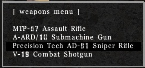

The basics
Game objective
- Find the enemy.
- Frag or gib the enemy.
- Repeat...
With the exception of flag modes, which also have some other objectives.
Controls
Learning how to play AssaultCube is easy. After knowing the controls, most things are relatively straight forward.
To play, press W to move forwards and then move your mouse around to change directions. Left-click when aimed at an enemy to attack them. Most other moves you can use to further your abilities and fun are covered below...
| Control | Function |
| Escape | Main menu |
| W | Move forward |
| S | Move backwards |
| A | Sidestep left |
| D | Sidestep right |
| Space | Jump |
| Left-shift | Crouch |
| R | Reload |
| T | Chat and console |
| Y | Team-chat |
| V | Voice-com menu |
| G | Quick nade throw |
| B | Change weapon menu |
| Left mouse-click | Attack |
| Right mouse-click | Quick nade throw (Or scope when using the sniper rifle) |
| Center mouse-click | Knife |
| Mousewheel | Cycle weapons |
| 1 | Primary weapon |
| 2 | Pistol |
| 3 | Grenade (if available) |
| 4 | Knife |
| Tab | Show scores |
| Left alt | Show mini-map |
| Backspace | Drop-flag |
| F1 | Vote yes |
| F2 | Vote no |
| F10 | Download the last recorded demo from the server |
| F11 | Show extended console |
| F12 | Create screenshot |
You can find a list of controls used in map editing here.
You can also assign custom keys to specific weapons by using the keybinding menu in-game. This can be found by pressing ESCAPE and then navigating to: settings ⇒ Input controls.
Starting a singleplayer game
This is simple. Just press ESC and then navigate to Singleplayer, then choose the mode, bot skill, amount of enemies and the map. Then, a game with computer-bot enemies will start immediately.
Joining a multiplayer game
In game, press ESC and choose Multiplayer ⇒ Join a server. The masterserver will be queried and provide you with a list of servers. The list of servers are saved in config/servers.cfg.
If the console says "master server not replying", then that means your client failed to download the list of servers to play upon, and you will need to Force serverlist update until it updates.
Alternatively, you can connect to a server directly by using the Custom connect menu and then enter a valid IP or DNS name of a server, the port and optionally, a password, if the server uses one.
Changing settings
Most important setting changes can actually be changed from within the menus. So, press ESC and then Settings. There are many important settings in this menu that can be changed, including changing your name and team. Look in there for what you need.
There are of course other settings which can't be found inside the menu. These settings can be changed via the console. Check out the reference to find out about those settings and how they can be changed.
How settings are saved
There is a file called defaults.cfg in the config directory. When you run AssaultCube for the first time it will execute this file. Once you quit AssaultCube, the default settings and your changes created upon them during the course of the game (and settings from your autoexec.cfg) will be stored in config/saved.cfg. If you want to reset your settings to default values just delete config/saved.cfg. Alternatively, you can delete it using the menus, by pressing ESCAPE and going into: Settings ⇒ Reset all settings.
If there are commands that you would like executed every time AssaultCube starts, you can insert these scripting commands into config/autoexec.cfg.
When AssaultCube is started, it will check for the file config/init.cfg. If it does not exist then AssaultCube assumes this is the first time you have ran AssaultCube and will prompt you with the "quick setup" menu. This contains settings for you to change that are important for running AssaultCube. Such as screen resolution, mouse sensitivity, nickname, etc. When you press "OK", then AssaultCube will restart to allow those settings to take effect. The config/init.cfg file saves settings that can only be changed before AssaultCube runs, so when AssaultCube first starts, it will execute those settings.
Note for linux users: Config files get saved in the hidden directory .assaultcube/config in your users home directory.
Note for windows users: Config files get saved in a directory in your "My Documents" folder.
Choosing a weapon

To select a primary weapon, press B to show the weapon menu (you can also find this
menu inside of the settings menu).
This menu will give you the option to pick any of the four primary weapons (Assault
rifle, Sniper rifle, Sub-machine gun, Shotgun).
The next time respawn, you will start with the weapon that you selected from this menu.
You can also select between your primary weapon, pistol/akimbo, grenade or knife by selecting them using the keys 1-4, or by scrolling through them with your mouse. Also, G will throw a grenade.
Quick nade throw: If you want to throw a grenade and then quickly switch back to your normal weapon, press and hold the right mouse button and then let go to throw the grenade. After throwing the grenade (if you clicked and held it) then it will switch back to your normal weapon.
You can find out more about the weapons here.

Orientation
If you can't find your way around the map, you can use the mini-map in the top-right corner of your screen (see right). Also, a bigger version of the map can be shown by pressing ALT.
To learn more about the mini-map, see here.
Scoreboard
You can see the scoreboard by pressing TAB. More information about the scoreboard can be found here.
Talking/Chatting
If you want to say something to other players, it's very simple. Just press T to bring up the console where you can type what you would like to the other players.
If you want to make sure what you say is said only to the players on your team (if in a team mode), then press U. This will bring up the console with a % sign in-front of it. The % sign is what is needed infront of ANYTHING you say to make it be seen ONLY by your team.
Gibs
Gibs are a great way of defeating another player. If you want to gain a lot of points fast, this is the way to do it, because gibs count for 2 points!
Gibs are created by: Headshots from sniper rifles, deaths from knifing & deaths from grenade blasts.
Suicide
If you ever find yourself stuck in a tough spot and need to commit suicide, simply type: /suicide.
Voting
Voting can be used to do many various things in Multiplayer. Such as changing mode/map, forcing a team change, changing mastermode, kick or ban a player, setting autoteam and removing bans.
You can make these votes through the menus in-game. When connected, press ESC and
go to Set mode/map.
...or by simply typing the command, i.e. /ctf ac_mines would start a vote
for ac_mines in CTF mode.
Note: You can only start a vote every now and then.
Use F1 to vote for votes that appear at the bottom left of your screen and use F2 to vote against them.
Spectating
After you get fragged, you can spectate a game simply by pressing the space bar. Using your mouse to scroll will change the player you are spectating. Pressing the space bar will scroll through 3 different spectate modes: Normal spectate, follow-player or follow with ghost (the person you are spectating becomes transparent to you).
Voice-com
To use the voice-coms during a multiplayer game, press V.
Then using numbers, select the voice-com you would like to say.
Screenshots
You can create a screenshot, at anytime during the game by pressing F12, or by typing /screenshot. Most players use screenshots as a way of keeping a record of their scores.
Demos
Demos are a little bit like video recordings of the game, except what they really do is record all the moves made in the game so it can be replayed later (it is not a video file!)
Demo's can only be recorded if you are an ADMIN and have the servers admin password. To record a demo, take admin and using the demo menu (Press ESC in-game and go to Demos). The next match, a recording will be made and you can vote to stop recording the demo at any time through: Demos ⇒ Stop recording. When the demo stops being recorded you will be prompted to download it by pressing F10 and if pressed your demo will be downloaded.
Note: Some servers automatically create demos for every single game (i.e. no admin needed).
If you would like to download a previous demo that's still located on the server, you can use: Demos ⇒ Download demos in the menus.
Playing and sending custom maps
If you want to play a custom map online, then there are two things you must do...
Firstly: Start the map - This is done by voting for the map and mode to be played. This can be done through the menus as shown in voting.
Secondly: Send the map - This is done by typing /sendmap. This will send the map file for the map stored on your computer to all the other players so that you can properly play the map. If the map has a config file, it will send that also. Note: You MUST have the map file!
Reset binds
If you would like to reset all your controls back to the defaults, you can type the /resetbinds command. Alternatively, you can find this inside settings ⇒ Keyboard/mouse controls by choosing Reset binds to default settings....
Reset configs
If you would like to be able to reset all settings AND controls to default values, you can do this easily by typing /resetcfg 1. You can also do this through the settings menu by selecting Reset all settings.
This command will delete the saved.cfg and the init.cfg file which contains all the settings for AssaultCube. You will need to restart AssaultCube for this to take effect.
Console
The console shows you messages from the game at the top-left corner of your screen. It also displays chat from other players. If you find that the console is moving too fast for you and you missed an important message that you would like to read, you can extend the console by pressing F11. You can also scroll up through the message by pressing the minus - key on your keypad.
More information about the console can be found here.
The size of the console can also be changed in the Settings ⇒ Gameplay menu.
In-game reference
If you would like to see a reference of commands during the game, you can access these through the menu by going through: Help ⇒ AssaultCube reference.
If you know the command you would like to use, but just want some information about it, you can type the command into AssaultCube and information about this command will be displayed. You can disable this documentation reference if you want by pressing F1 when it is shown.
You can also search the reference through: Help ⇒ Search the reference.